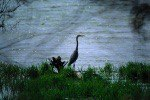

Природа (термін є частковою калькою латинського слова natura - від лат. nat - народжувати, породжувати) - це сутність, яка породжує усе суще і дає йому закони
Тигр, пантера тигр (Panthera tigris) — великий ссавець родини котових, один з чотирьох видів групи «великих кішок» роду пантер (Panthera). Слово «тигр» походить від грецького tigris, яке у свою чергу походить з іранських мов, і означає ревіння чи зойк наприкінці радісного вітання. Еволюційним центром походження і сучасного ареалу є Східна та Південно-Східна Азія.
Слон — загальна народна назва всіх родів і видів тварин з родини Слонові (Elephantidae). Сучасні слони мешкають у Африці на південь від Сахари та в Південній Азії. Ця група тварин має величезне значення в історії багатьох народів світу і культур.
Чапля (Ardea) — рід птахів родини чаплевих (Ardeidae). Слово чапля походить від прасл. capja, утвореного з дієслова capati («чапати», «чалапати», «ходити з плескотом»), що пов'язане з характерними особливостями її пересування на мілководді. Представники родини мешкають у водно-болотних біотопах. Довжина до 110 см, вага до 2 кг.
